Unless noted otherwise, every result above uses transA = transB = "no-transpose". Both shaders load A/B into shared memory with a transpose-dependent index that scatters what would otherwise be a coalesced load — but it's asymmetric: transB dominates (measured +22-57% at n=1024) while transA is small and can even be faster than no-transpose, because B's tile dimension spans a full warp in the coalesced case (so transpose scatters every warp) while A's never gets a full-warp-coalesced load to begin with. All 4 (transA, transB) combinations are swept — collapsed below by default, expand a transA value, then a transB, to see its table and chart (4 combinations total).
trans.sgemm.c — CUDA / cuBLAS trans-sweep reference script
Ldb sweep
Unless noted otherwise, every result above uses a tight lda/ldb/ldc (no padding). lda and ldc were scoped and found to be non-effects; padding ldb only matters for transB = "transpose" here (swept at both transB values below so that's visible in the data). Collapsed below by default — expand a transB value, then a pad, to see its table and chart.
ldb.sgemm.c — CUDA / cuBLAS ldb-sweep reference script
alpha sweep
alpha is a plain multiplier here: the kernel applies it unconditionally, with no branch for any particular value. A flat sweep is therefore the expected result and is recorded as a measured null. Levels include 0, 1 and a denormal-producing 1e-38 because those are the values a shader could special-case if it ever grew a branch — and strsm is the routine where one does.
alpha.sgemm.c — CUDA / cuBLAS alpha-sweep reference script
beta sweep
beta scales the existing y/C before accumulation. Reference BLAS is permitted to skip reading that operand entirely when beta is 0, so unlike alpha this sweep has a mechanism to be non-flat — a step at 0 means the shortcut is taken, and its size is what it saves.
beta.sgemm.c — CUDA / cuBLAS beta-sweep reference script
layout sweep
Column-major swaps the effective m/n and flips the transpose flag internally, changing which axis is contiguous and therefore how the matrix reads coalesce. wgblas-only: cuBLAS is column-major and has no layout argument, so there is no reference curve to compare against.
Padding on the output matrix. C is written rather than streamed, so this measures write coalescing rather than read bandwidth — the row byte-stride is ldc*4, and a pad that moves it off the 128-byte boundary is what would show up here.
Benchmark results for sgemm on Nvidia Geforce Gtx 1650.
Nvidia Geforce Gtx 1650 — wgblas vs cuBLAS
See also
Transpose sweep
Unless noted otherwise, every result above uses
transA = transB = "no-transpose". Both shaders load A/B into shared memory with a transpose-dependent index that scatters what would otherwise be a coalesced load — but it's asymmetric:transBdominates (measured +22-57% at n=1024) whiletransAis small and can even be faster than no-transpose, because B's tile dimension spans a full warp in the coalesced case (so transpose scatters every warp) while A's never gets a full-warp-coalesced load to begin with. All 4(transA, transB)combinations are swept — collapsed below by default, expand atransAvalue, then atransB, to see its table and chart (4 combinations total).Nvidia Geforce Gtx 1650 — transA = no-transpose (2 transB values)
transB = no-transpose
transB = transpose
Nvidia Geforce Gtx 1650 — transA = transpose (2 transB values)
transB = no-transpose
transB = transpose
See also:
Ldb sweep
Unless noted otherwise, every result above uses a tight
lda/ldb/ldc(no padding).ldaandldcwere scoped and found to be non-effects; paddingldbonly matters fortransB = "transpose"here (swept at bothtransBvalues below so that's visible in the data). Collapsed below by default — expand atransBvalue, then apad, to see its table and chart.Nvidia Geforce Gtx 1650 — transB = no-transpose (6 pads)
pad = 0
pad = 1
pad = 8
pad = 16
pad = 32
pad = 64
Nvidia Geforce Gtx 1650 — transB = transpose (6 pads)
pad = 0
pad = 1
pad = 8
pad = 16
pad = 32
pad = 64
See also:
alpha sweep
alphais a plain multiplier here: the kernel applies it unconditionally, with no branch for any particular value. A flat sweep is therefore the expected result and is recorded as a measured null. Levels include0,1and a denormal-producing1e-38because those are the values a shader could special-case if it ever grew a branch — andstrsmis the routine where one does.Nvidia Geforce Gtx 1650 — alpha = -3.75
Nvidia Geforce Gtx 1650 — alpha = 0
Nvidia Geforce Gtx 1650 — alpha = 1e-38
Nvidia Geforce Gtx 1650 — alpha = 1
Nvidia Geforce Gtx 1650 — alpha = 2.5
See also:
beta sweep
betascales the existingy/Cbefore accumulation. Reference BLAS is permitted to skip reading that operand entirely whenbetais 0, so unlikealphathis sweep has a mechanism to be non-flat — a step at 0 means the shortcut is taken, and its size is what it saves.Nvidia Geforce Gtx 1650 — beta = -3.75
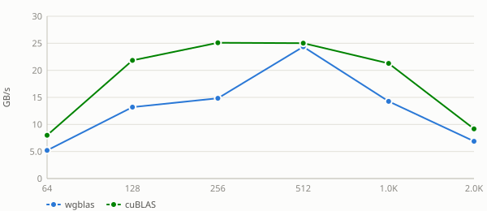
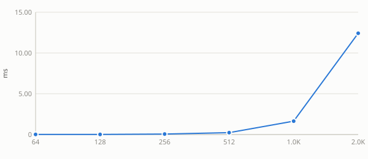
Nvidia Geforce Gtx 1650 — beta = 0
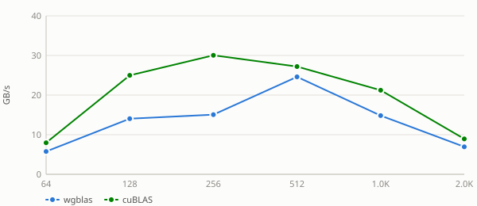
Nvidia Geforce Gtx 1650 — beta = 1
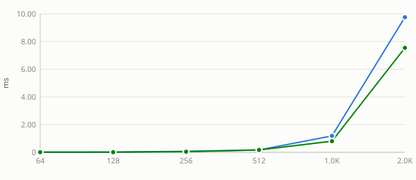
Nvidia Geforce Gtx 1650 — beta = 2.5
See also:
layout sweep
Column-major swaps the effective
m/nand flips the transpose flag internally, changing which axis is contiguous and therefore how the matrix reads coalesce. wgblas-only: cuBLAS is column-major and has no layout argument, so there is no reference curve to compare against.Nvidia Geforce Gtx 1650 — layout = column-major
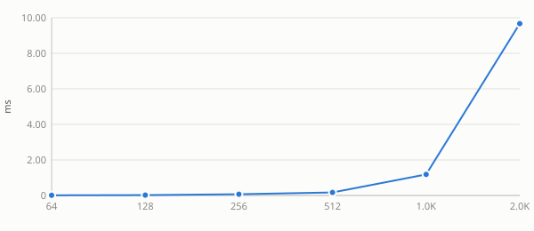
Nvidia Geforce Gtx 1650 — layout = row-major
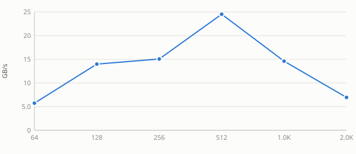
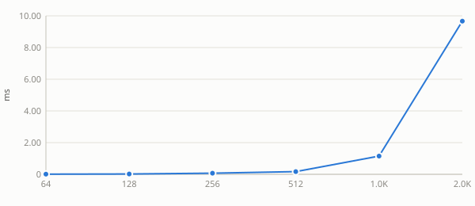
See also:
ldc sweep
Padding on the output matrix.
Cis written rather than streamed, so this measures write coalescing rather than read bandwidth — the row byte-stride isldc*4, and a pad that moves it off the 128-byte boundary is what would show up here.Nvidia Geforce Gtx 1650 — ldc = n + 0
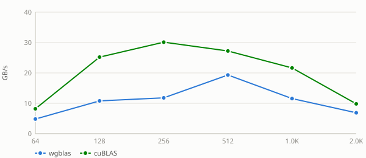
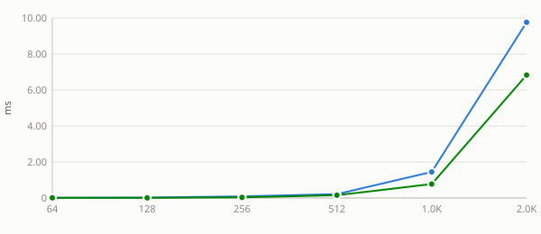
Nvidia Geforce Gtx 1650 — ldc = n + 1
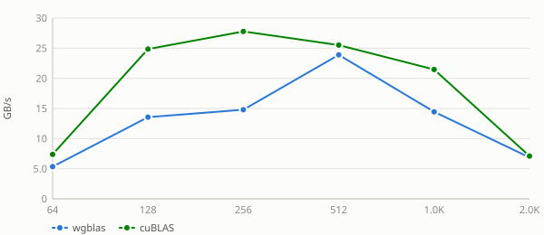
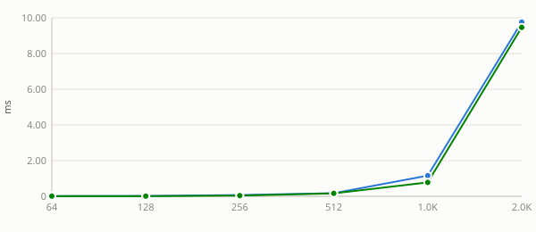
Nvidia Geforce Gtx 1650 — ldc = n + 8
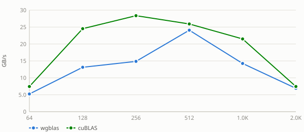
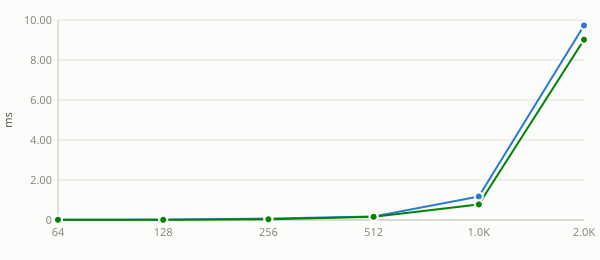
Nvidia Geforce Gtx 1650 — ldc = n + 16
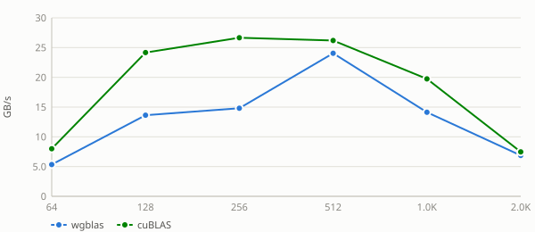
Nvidia Geforce Gtx 1650 — ldc = n + 32
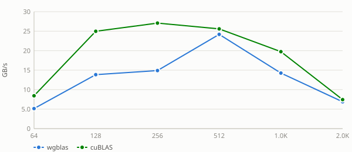
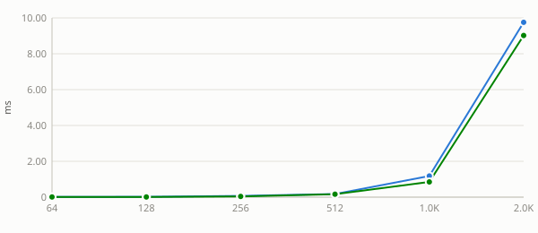
Nvidia Geforce Gtx 1650 — ldc = n + 48
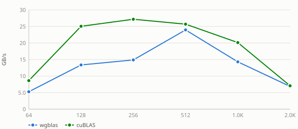
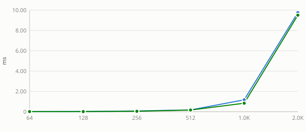
Nvidia Geforce Gtx 1650 — ldc = n + 64
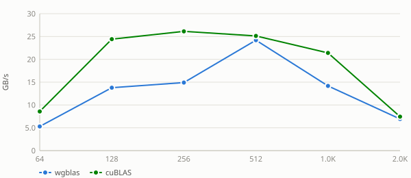
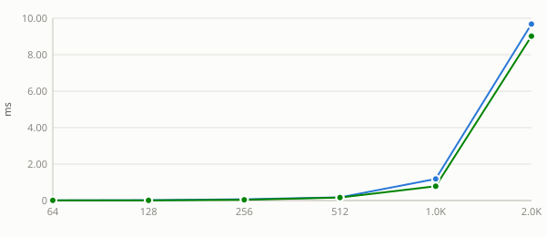
Nvidia Geforce Gtx 1650 — ldc = n + 128
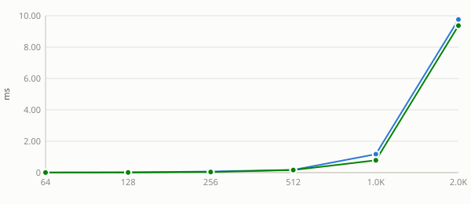
See also: